Dein Kran ist ein hochwertiges Großgerät, das Dir sorgfältige Pflege mit steter Einsatzbereitschaft dankt.
| Hebe nie | - eine Überlast |
| Reiße nie | - festsitzende Lasten los |
| Ziehe nie | - im Schrägzug |
| Verlaß Dich nie | - auf Lastmoment begrenzer und Notendhalteinrichtung |
Einheitsgewichte (Dichte)
| Baustoffe: | t / m3 |
| Granit | 2,8 |
| Kalkstein | 2,7-2,9 |
| Sandstein | 2,6 |
| Stahlbeton | 2,5 |
| Beton aus Kies | 2,3 |
| Klinkerziegelsteine | 2,0 |
| normale Ziegel voll | 1,8 |
| Lochziegel | 1,5 |
| Mörtel | 2,0 |
| Asbestzement | 2,0 |
| Bodenarten: | |
| Sand und Kies naß | 2,0 |
| Sand und Kies trocken | 1,8 |
| Steinschotter | 1,8 |
| Lehm und Ton | 2,1 |
| Metalle: | |
| Stahl und Eisen | 8,0 |
| Holz: | |
| naß | 0,9 |
| trocken | 0,7 |
Merke:
Die Dichte (spezifisches Gewicht) gibt an. wievielmal ein Körper schwerer oder leichter ist, als ein gleich großer Körper Wasser
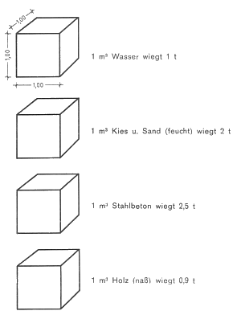
Ziegelsteine je Stück:
| Normalformat 24x11,5x7,1 cm | Vollstein ca. 3,8-4 kg
Lochstein ca. 3 kg |
| NF Langlochziegel 24x11,5x7,1 | 1,8-2,7 kg |
| 2 DF Langlochziegel 24x11,5x11,3 | ca. 3 kg |
| Gitterstein 24x17,5x11,3 | 6 kg |
| Klinker Normalformat 24x11,5x7,1 | 4-5 kg |
Betonsteine je Stück: Hohlblockstein mit Aussparungen
| Schwerbeton | |
| 49,0x24,0x23,8 cm | ca. 35-40 kg |
| 30,0x24,0x23,8 cm | ca. 25 kg |
| Ziegelsplitt | |
| 49,0x24,0x23,8 cm | ca. 30 kg |
| Bims | |
| 49,0x24,0x23,8 cm | ca. 20-25 kg |
| Deckensteine zweischalig in Schwerbeton | ca. 25-30 kg |
| Deckenschalensteine, einwandig je nach Dicke | ca. 15-20 kg |
| Zechdeckenplatte 55x33x5 cm | ca. 18 kg |
Fertigbalken für Massivdecken:
| Konstruktionshöhe 18-20 cm je m |
ca. 30-40 kg |
Eiförmige Betonrohre mit Fuß
| Gewicht je m | |
| 40x 60cm | - ca. 300 kg |
| 50x 75 cm | - ca. 417 kg |
| 60x 90 cm | - ca. 625 kg |
| 70x105 cm | - ca. 770 kg |
| 80x120 cm | - ca. 975 kg |
| 90x135 cm | - ca. 1190 kg |
| 100x150 cm | - ca. 1339 kg |
| 120x180 cm | - ca. 2220 kg |
Kreisrunde Betonrohre mit Fuß
| Nennweite: | Gewicht: |
| 50 cm | ca. 209 kg / m |
| 60 cm | ca. 321 kg / m |
| 70cm | ca. 420 kg / m |
| 80cm | ca. 539 kg / m |
| 90cm | ca. 673 kg / m |
| 100cm | ca. 823 kg / m |
| 120cm | ca. 1120kg / m |
| 140cm | ca. 1467 kg / m |
Kreisförmige Betonrohre ohne Fuß
| Nennweite: | Gewicht: |
| 50 cm | ca. 191 kg / m |
| 60 cm | ca. 271 kg / m |
| 70cm | ca. 348 kg / m |
| 80cm | ca. 447 kg / m |
| 90cm | ca. 557 kg / m |
| 100cm | ca. 678 kg / m |
| 120cm | ca. 915 kg / m |
| 140cm | ca. 1190 kg / m |
Klär- und Faulgrubenfertigteile
Stahlbetonringe ohne Boden
| 2,05 m Ø Lichte, Höhe 0,82 m, Wanddicke 17 cm | 1,1 t |
| 1,50 m Ø Lichte. Höhe 1,0 m, Wanddicke 15 cm | 1,0 t |
Klärgrubenringe mit Boden
| 2,05 m Ø Lichte, Höhe 0,87 m | 1,8 t |
| 1,50 m Ø Lichte, Höhe 1,05 m | 1,2 t |
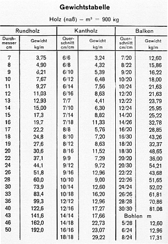
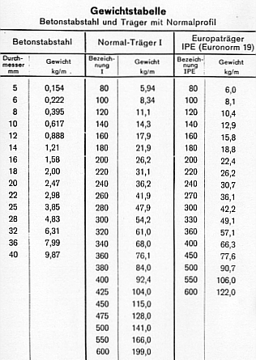
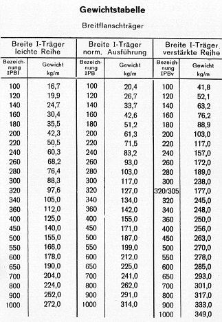
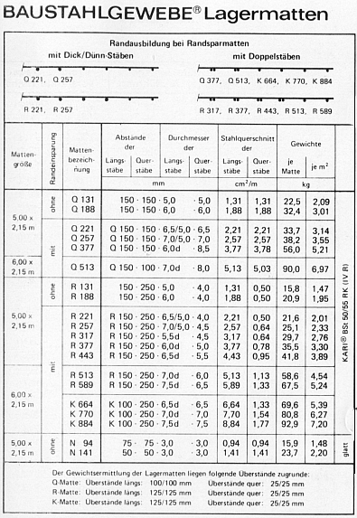
Zulässige Belastung von Anschlagseilen nach DIN 3088
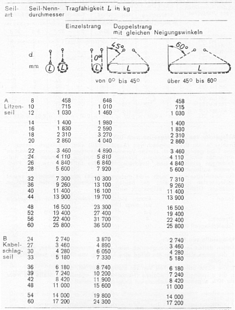
Die Tabelle gilt für Stahldraht-Anschlagseile nach DIN 3088 (Ausgabe Mai 1976) mit einer Nennfestigkeit der Einzeldrähte von 1 570 N/mm2, einem Füllfaktor für Litzenseile von mindestens 0,455, für Kabelschlagseile von mindestens 0,303 und mindestens 114 Einzeldrähten in den Litzenseilen.
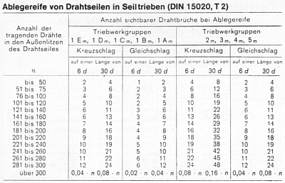
Ablegereife von Anschlagseilen nach DIN 3088
Drahtseile von Drahtseilgeschirren (Anschlagseil) sind abzulegen, wenn: eine Litze gebrochen ist, starker Verschleiß erkennbar ist, Korrosionsnarben vorhanden sind, Quetschungen, Klanken oder Knicke vorhanden sind, Aufdoldungen erkennbar sind, Beschädigungen des Spleißes bzw. der Preßklemme vorliegen.
Ein Anschlagseil darf auch nicht mehr verwendet werden, wenn an seiner schlechtesten Stelle eine der beiden nachstehend genannten Anzahlen sichtbarer Drahtbrüche festgestellt wird;
| Seilart | Litzenseil Kabelschlagseil Anzahl sichtbarer Drahtbrüche bei Ablegereife auf einer Länge von | ||
| 3 d | 6 d | 30 d | |
| Litzenseil | 4 | 6 | 16 |
| Kabelschlagseil | 10 | 15 | 40 |
Ablegereife von Ketten1)
Ketten dürfen im Hebezeugbetrieb nicht mehr verwendet werden, wenn
1) Unfallverhütungsvorschrift "Lastaufnahmeeinrichtungen im Hebezeugbetrieb" (VBG 9a) |
Rundstahlketten, Güteklasse 8
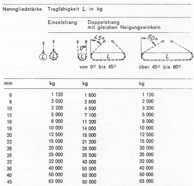
Bei ungleichen Neigungswinkeln wird der senkrechter hängende Strang stärker belastet.
Daher Tragfähigkeit herabsetzen!
Dann darf nur die Tragfähigkeit'des Einzelstranges eingesetzt werden. Nur bei Drei- und Vierstranggehängen mit Neigungswinkeln von 0° bis 45° darf das 1,5-fache der Tragfähigkeit eines Einzelstranges eingesetzt werden.
Diese Tabelle gilt für Anschlagketten nach DIN 5688, Teil 3, Ausgabe Mai 1976. Die Werte gelten nur für die Belastung im geraden Strang und bei gleich mäßiger Belastung aller Stränge.
Benutzung von Seilen und Ketten 1)
1) Unfallverhütungsvorschrift "Lastaufnahmeeinrichtungen im Hebezeugbetrieb" (VBG 9a) |
Allgemeines
Seile und Ketten dürfen nicht über ihre höchstzulässige Belastung hinaus belastet werden.
Bei Anschlagseilen und -ketten mit mehr als 2 Strängen dürfen nur zwei Stränge als tragend gerechnet werden.
Bei Verwendung von Anschlagseilen und -ketten sind die hochstzulässigen Belastungen nach dem jeweiligen Neigungswinkel (Spreizwinkel) zu bemessen. Neigungswinkel über 60° (Spreizwinkel über 120°) sind nicht zulässig. Bei ungleichen Neigungswinkeln der einzelnen Stränge sowie deren ungleichmäßiger Belastung (z. B. bei Lasten, deren Schwerpunkt außerhalb ihrer Mitte liegt) kann es vorkommen, daß ein einzelner Strang die volle Last zu tragen hat. In solchen Fällen ist stets die Tragfähigkeit eines Einzelstranges anzunehmen
Seile und Ketten sowie Seil- und Kettengeschirre sind mit Sicherheitshaken oder unlösbar an den Traggefäßen (z. B. Kübel, Steinkorb) zu befestigen. Beim Heben scharfkantiger Gegenstände sind die Seile und Ketten an den Last kanten 'durch weiche Zwischen lagen, z. B. aus Holz, gegen Beschädigungen zu schützen.
Werden Anschlagseile und -ketten mehrmals um eine Last geschlungen, so müssen die Windungen dicht nebeneinander liegen, ohne sich zu kreuzen.
Drahtseile
Im Hebezeugbetrieb sind möglichst drehungsfreie Seile zu verwenden. Mit Kunststoff ummantelte oder beschichtete Drahtseile dürfen nicht verwendet werden.
Mit Hubseilen dürfen die Lasten nicht angeschlagen werden. Die Bildung von Seilschleifen ist zu vermeiden.
Die Biegung der Seile an Kanten oder auf Rollen mit kleinem Durchmesser setzt die Tragfähigkeit herab. In solchen Fällen sind Seile mit größerer Tragkraft zu verwenden. Bei starkem Frost wird die Tragfähigkeit stark herabgesetzt. Drahtseile sind vor Nasse zu schützen. Zur Pflege und Wartung gehört auch das Einfetten. Stark verschmutzte Drahtseile müssen von Zeit zu Zeit gereinigt werden. Drahtseile sind in regelmäßigen Zeitabständen auf ihren betriebssicheren Zustand zu überprüfen Besonders ist hierbei auf die Seilteile zu achten, die über Seilrollen laufen oder die sich in der Nahe von Seilaufhängungen oder Seilbefestigungen befinden.
Ketten
Im Hebezeugbetrieb dürfen als Anschlagketten nur Haken-und Ringketten nach DIN 5688 und geprüfte Ketten nach DIN 685 verwendet werden. Die Ketten dürfen unter ungünstigen Verhältnissen (z. B. stoßweise Belastung, Frost) nicht voll belastet werden. Bei Frost von -20° C verringert sich die zulässige Belastung um die Hälfte.
Ketten dürfen nicht geknotet werden. Verdrehte Ketten sind vor dem Benutzen auszudrehen.
Gerissene Ketten dürfen nicht dadurch geflickt werden, daß Kettenglieder mit Draht zusammengebunden oder mit. Schrauben zusammengehalten werden.
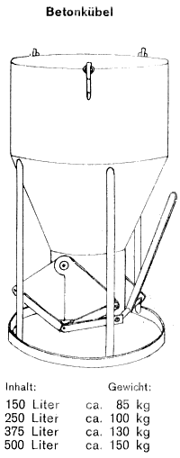
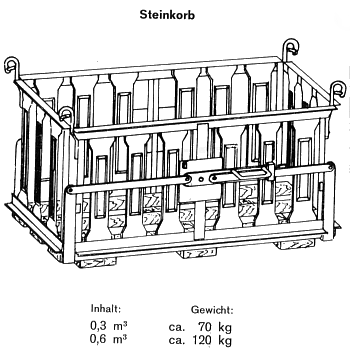
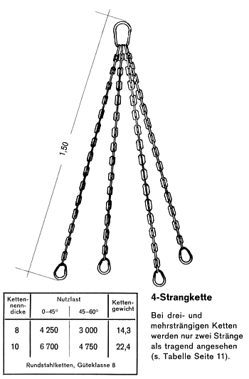
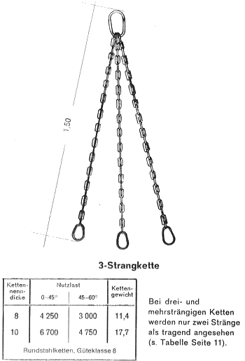
| Lfd. Nr. | Schienen-profil | Fuß-breite mm | Kopf-breite mm | Höhe mm | kg/m | Widerstands-moment Wx cm3 | Bemerkungen |
| 1 | S. 18 | 82 | 43 | 93 | 18,3 | 58,1 | Schiene 93/18 |
| 2 | S. 20 | 82 | 44 | 100 | 19,84 | 66,8 | Schiene 100/20 |
| 3 | S. 24 | 90 | 53 | 115 | 24,43 | 97,3 | Preussen Fo. 5 |
| 4 | S. 30 | 108 | 60,3 | 108 | 30,03 | 108,5 | Bergbauprofil |
| 5 | S. 33 | 105 | 58 | 134 | 33,47 | 155 | Preussen Fo. 6 |
| 6 | Fo. 8 | 110 | 72 | 138 | 41,38 | 195,8 | Preussen Fo. 8 |
| 7 | S. 41 | 125 | 67 | 138 | 40,95 | 196 | |
| 8 | S. 45 | 125 | 67 | 142 | 45,44 | 215 | |
| 9 | S. 49 | 125 | 67 | 149 | 49,43 | 249 | Bundesbahnprofil |
| Nachstehende Schienenprofile werden nicht mehr hergestellt: | |||||||
| 1 | Fo. 11 | 100 | 58 | 115 | 27,55 | 111,6 | Preussen Fo.11 |
| 2 | Fo. 10 | 105 | 58 | 129 | 31,16 | 138,3 | |
| 3 | Bayern X | 125 | 65 | 140 | 43,86 | 202,0 | auch Württemb. Fo. E, Baden 140 |
| 4 | Fo. 15 | 110 | 72 | 144 | 45,22 | 219,5 | Preussen Fo.15 |
| 5 | Würtemberg D | 104 | 58 | 130 | 33,80 | 148,9 | |
| 6 | Baden 129 | 105 | 60 | 129 | 36,20 | 150,0 | |
| 7 | Bayern VIII | 98 | 52 | 120 | 27,32 | 110,5 | |
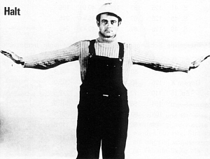
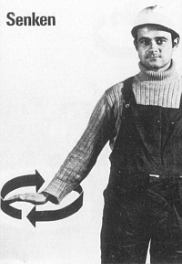
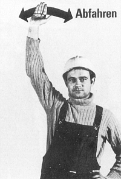
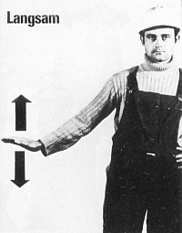